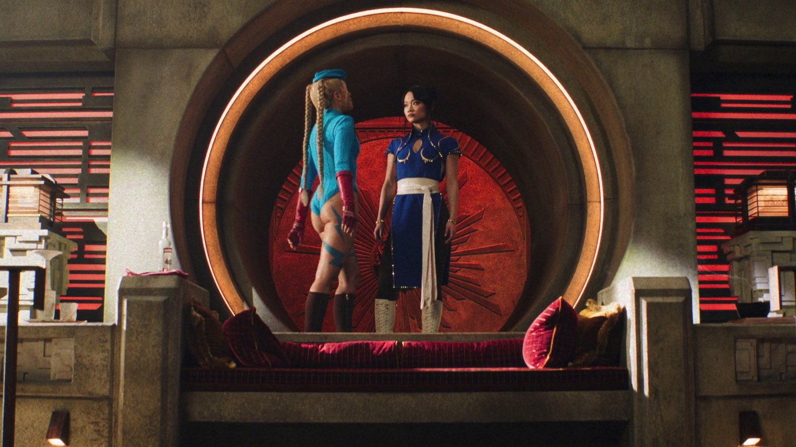
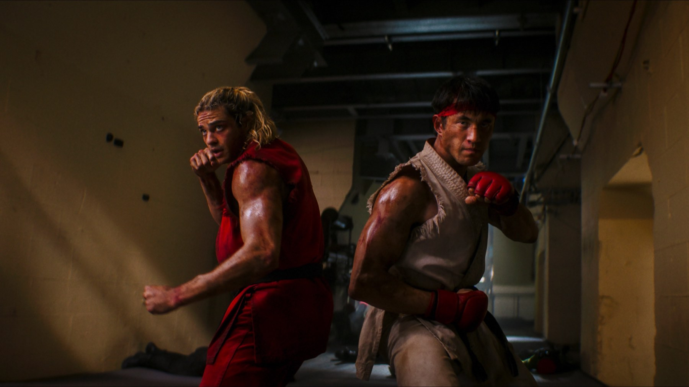

Street Fighter
Kitao Sakurai porta in sala quasi tutto il gioco Capcom, dal Psycho Crusher ai camei dei campioni, ma dimentica di dare una ragione a chi combatte
Street Fighter funziona quando i lottatori si colpiscono e si inceppa ogni volta che qualcuno deve spiegare perché lo fa. Kitao Sakurai ha scelto di portare in sala quasi tutto il gioco Capcom, dal torneo all'Hadouken, dal Psycho Crusher a una ventina di personaggi con un volto noto in ogni ruolo, e il film ne esce con molta energia e poca storia. Ci ha convinto l'ambizione, molto meno il racconto: lo scriviamo partendo dal trailer italiano e dalle recensioni lette, non da una visione in sala, ma chi entra per i duelli troverà in buona parte quello che cerca.
Di cosa parla Street Fighter?
Il prologo è del 1987: Ryu vince il primo torneo World Warrior contro Sagat grazie al Satsui no Hadou, il lato oscuro del suo potere, e attira l'attenzione del demone Akuma. Sei anni dopo, nel 1993, il dittatore Bison, a capo di Shadaloo, organizza un secondo torneo a Metrolao City proprio per attirare Ryu. Chun-Li, agente dell'Interpol che cerca vendetta per l'omicidio del padre, convince Ryu a partecipare; con lui scendono in campo Ken Masters e altri combattenti. Il trailer italiano riassume la posta in due battute: «Tuo fratello Ken è in pericolo» e «Se vuoi salvare tuo fratello, allora devi combattere».

La scena che vale il film
Il momento che la trama rende più promettente sta nella torre di Bison. Ryu è stato catturato e il dittatore prova a estrarre i suoi poteri con un dispositivo, ma lui libera Blanka, il personaggio di Jason Momoa, con un Hadouken. È la scena in cui la logica del gioco, una mossa con un nome che tutti conoscono, diventa un gesto con una conseguenza nella storia: qualcuno viene liberato. La conosciamo dal riassunto e non dalla sala, e proprio per questo la indichiamo come il punto in cui il film ha la possibilità di dare un motivo a un colpo speciale.
Un film che si prende in giro
Il tono lo racconta bene uno scambio del trailer italiano. «Chi ti ha conciato così la faccia, Guy?», chiede una voce, e la risposta è «Non lo so, Dan»; subito dopo arriva una battuta sugli artigli, quelli di un avversario che il pubblico del gioco riconosce al volo. Dan Hibiki nel film è Andrew Schulz, e lo scambio funziona come una strizzata d'occhio perché presuppone che si conosca la serie: i fan sorridono, mentre tutti gli altri restano fuori dalla porta. Lo stesso trailer promette «la cosa si fa interessante», ma una promessa del genere in due minuti di montaggio non basta a tenere in piedi una storia di due ore.
Dove inciampa
Il problema ha un nome preciso, e lo indica Pedro Armocida su MYmovies: le motivazioni dei personaggi restano poco chiare e l'antagonista non è del tutto credibile. Lo vediamo già nel confronto tra trailer e trama. Il trailer vende una ragione sola, salvare un fratello, mentre nella trama Ken lascia il torneo dopo aver scoperto il piano di Bison e finisce prigioniero con Ryu: la ragione per combattere cambia strada a metà. Nel frattempo ogni nome noto ottiene il suo incontro, Vega contro Guile, cioè Orville Peck contro Cody Rhodes, Ken contro Balrog, cioè Noah Centineo contro 50 Cent, e il torneo diventa una vetrina invece di un percorso.
Clint Worthington, su RogerEbert.com, aggiunge che le due ore si chiudono con un richiamo evidentissimo al sequel, che rende il film ancora più incompiuto. Grace Randolph, su Beyond the Trailer, loda il cast e l'energia, ma giudica la sceneggiatura piuttosto brutta e il finale ridicolmente brusco. Le due voci arrivano alla stessa conclusione da strade diverse, e per questo ci sembra il difetto vero del film, non un capriccio di gusto.
Il confronto con il film del 1994
Il paragone obbligato è con il Street Fighter di Steven E. de Souza, uscito negli Stati Uniti il 23 dicembre 1994, con Jean-Claude Van Damme nei panni di Guile e Raul Julia in quelli di Bison. De Souza evitò di proposito gli elementi sovrumani del gioco, mentre Sakurai fa il contrario: il Satsui no Hadou e l'Hadouken ci sono, così come il Psycho Crusher, e questa è la sua scelta più coraggiosa. Dopo trent'anni la richiesta dei fan si è rovesciata, perché nel 1994 il gioco veniva tradito per sembrare credibile e nel 2026 viene celebrato senza che il film si preoccupi di esserlo.

I numeri
A novembre 2026 Street Fighter ha il 41% di giudizi positivi su Rotten Tomatoes (140 critici), 43 su 100 su Metacritic (27 critici) e un CinemaScore B-. La sintesi di Rotten Tomatoes riconosce l'affetto per il materiale d'origine, ma punisce un racconto incoerente e un umorismo infantile. Il film dura 120 minuti e ha incassato 92,4 milioni di dollari nel mondo contro un budget di 82, una cifra che supera la spesa, ma il calo del 72% nel secondo weekend americano, fermo a 8,6 milioni, non promette una lunga corsa. Il film del 1994 aveva il 20% su Rotten Tomatoes e incassò 99,4 milioni su 35 di budget. In Italia l'esordio è stato al sesto posto, con 53.469 euro nel primo giorno e 6.756 spettatori in 270 sale, secondo MYmovies.
Cosa c'è dietro il film
Il prologo del 1987, con Ryu che batte Sagat, è animato in 2D dallo studio Titmouse, e ci sembra la scelta più azzeccata dell'impianto: la leggenda del gioco resta un disegno, mentre il film vero e proprio comincia nel 1993 con attori in carne e ossa. Armocida apprezza proprio questa nostalgia, ma è un'eccezione, perché il resto del film corre verso i duelli. Il progetto è passato di mano, perché Danny e Michael Philippou lasciarono nel giugno 2024 per altri impegni e la regia andò a Sakurai; le riprese si sono svolte in Australia da agosto a novembre 2025 con il titolo di lavorazione «Punch». Dei doppiatori italiani non abbiamo trovato fonti aperte, e preferiamo non indicarli.
A chi lo consigliamo
Lo consigliamo a chi ha passato i pomeriggi in sala giochi o davanti alla console e vuole rivedere l'Hadouken sul grande schermo: su questo punto le voci che abbiamo letto concordano, l'energia c'è. Lo sconsigliamo a chi cerca un racconto che si chiuda, perché la ragione promessa dal trailer, salvare un fratello, nella trama si perde per strada. In Italia è nelle sale dal 15 ottobre 2026 con Eagle Pictures, un giorno prima degli Stati Uniti.
Un film che ha capito il gioco e dimentica il cinema: i combattimenti e l'affetto per il materiale d'origine reggono, mentre la storia e il finale no. Lo consigliamo a chi ha amato il picchiaduro di Capcom, non a chi si aspetta un racconto compiuto.
Domande frequenti
Quando esce Street Fighter in Italia?
Nelle sale italiane dal 15 ottobre 2026, con Eagle Pictures. Negli Stati Uniti l'uscita ampia è del 16 ottobre.
Quanto dura Street Fighter?
120 minuti.
Di cosa parla il film?
Nel 1993 il dittatore Bison organizza un torneo a Metrolao City per attirare Ryu; l'agente Chun-Li lo recluta insieme a Ken Masters per affrontarlo.
Com'è stato accolto Street Fighter?
A novembre 2026 ha il 41% di giudizi positivi su Rotten Tomatoes, 43 su 100 su Metacritic e un CinemaScore B-: voci in prevalenza severe, con l'energia come punto più apprezzato.